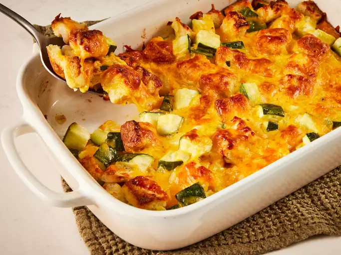
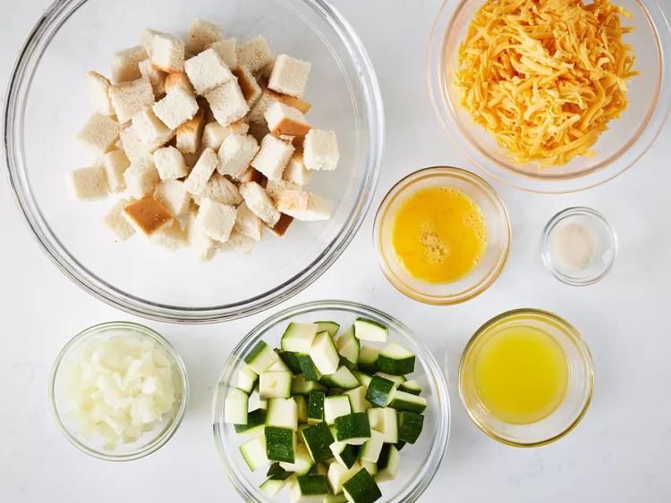
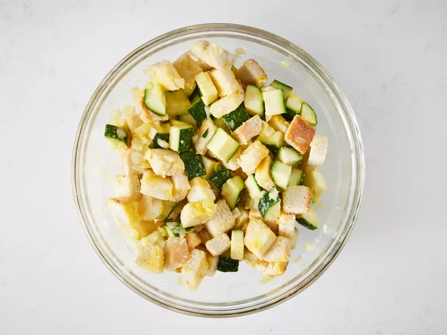
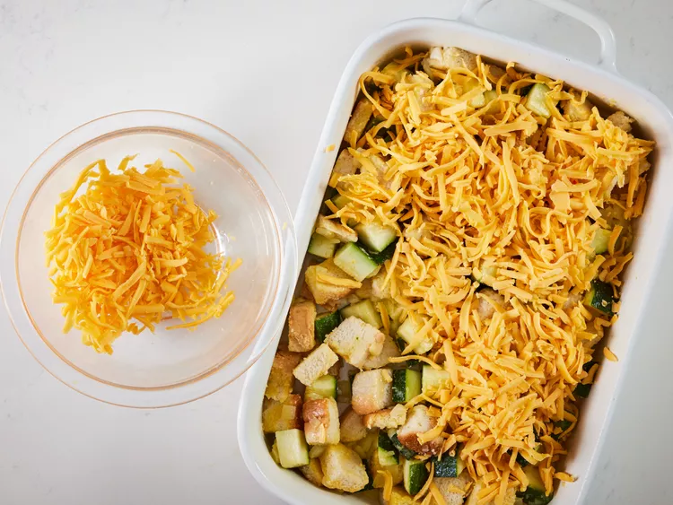

Home
Cheesy Zucchini Casserole

Description
This zucchini casserole with bread cubes, onion, and Cheddar is simple and easy to make for a deliciously cheesy vegetable side dish.
Ingredients
- 4 slices bread, cubed
- ¼ cup melted butter
- 2 cups cubed zucchini
- 1 large onion, finely chopped
- 1 large egg, beaten
- 1 teaspoon garlic salt or to taste
- 2 cups shredded Cheddar cheese
Steps
- Gather all ingredients. Preheat the oven to 350 degrees F (175 degrees C).

- Place bread cubes in a medium bowl and pour melted butter over top. Add zucchini, onion, egg, and garlic salt; mix well.

- Transfer the mixture into a 9x13-inch baking dish and top with cheese.

- Cover and bake in the preheated oven for 30 minutes. Uncover the dish and bake for another 30 minutes.Cover and bake in the preheated oven for 30 minutes. Uncover the dish and bake for another 30 minutes.